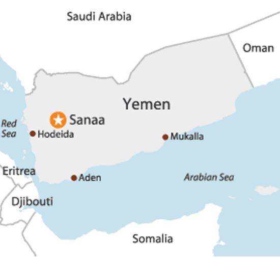
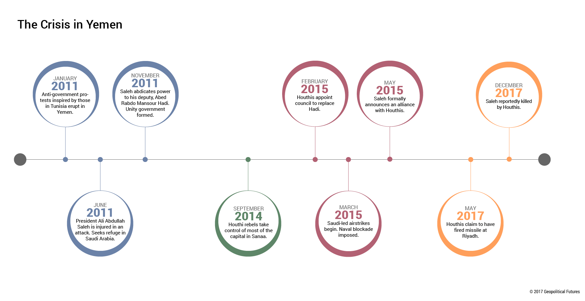
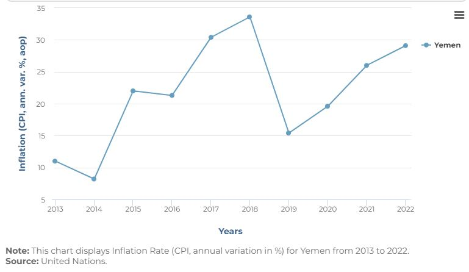
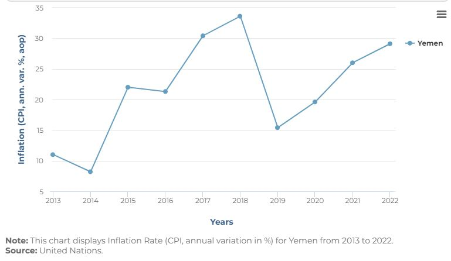

Yemen
Overview
Located at the southern tip of the Arabian Peninsula, Yemen is vital to the Middle East’s regional security. Geographical location is Yemen’s most consequential feature, sharing control of global access to the Bab-al-Mandab straight with neighboring country Saudi Arabia. This straight is a valuable strategic chokepoint for maritime trade globally, making Yemen relevant in contemporary global power struggles.
Background
Yemen has been in a state of conflict since September 16th, 2014. The day that rebel Houthi forces took over Sanaa, the capital city, and took control of the government from the Iranian-backed government set in place since the early 2000s. Currently, the Zaidi Shia Houthi forces hold the northern half of the country plus the capital and battle Saudi-led coalitions in the south. This is what is seen by some as a proxy war fueled by multiple potential variables, some believe it’s a result of the broader Sunni-Shia sectarian conflict as well as Iran and Saudi Arabia’s rivalry. But others, mostly in Iran, believe there is more complexity to the conflict stemming from the regional order set into place after Arab Springs. The situation only becomes more complex as Houthi alliances evolve and the coalitions continue to fragment.
Current Events
Houthi forces have recently begun a series of attacks on international shipping freights in the Red Sea in 2023, the US/UK launched bomb strikes that summer on Houthi military sites in retaliation for their disturbance of international shipping lines passing Yemen. These strikes have jeopardized a potential short-term ceasefire that was in the works, putting it on pause for the foreseeable future. International shipping giants Maersk and Hapag-Lloyd have suspended their shipping lines passing through the Red Sea, incentivizing world powers to intervene to prevent the slowing of the world economy (Reid, 2024) (MERIP, 2019).
Resources
Yemen is rich in natural resources, bringing in lots of interest from world powers in
times of instability, for better or for worse. A significant part of Yemen’s exports is oil,
with over 9 million barrels in reserves, these exports make up a significant percentage of
the country’s revenues (Evans, 2012). Current conflicts coupled with aging equipment have
slowed production greatly. Yemen also has a wealth of untapped mineral deposits. Rare
materials like rock salt, limestone, coal, copper, iron, gold, nickel, zinc, and more are
unexplored due to lacking infrastructure (Library of Congress, 2010). Mining limestone for
cement production is the country’s primary mineral focus, producing a combined 1.25 million
tons of cement per year from the Bajil, Amran, and Al-Burg factories (Land Links, 2010).
The country also holds the potential for a booming fishing industry along its expansive
coastline.
On the other hand, there are reasons that Yemen’s potential remains untapped. There are
no permanent rivers, only 1% of land is considered forest (located at Jabel Bura’), and
3% of total land is considered arable (Land Links, 2010). Water security is another
concern, despite the country’s above-average natural water resources in comparison to
other gulf states, mismanagement of water has led to struggles in distribution. Just
86 cubic meters of fresh water per person annually is well below the water security
threshold of 500 cubic meters per person (United Nations, 2024).
Economy
Before the Civil War Yemen was already ranked as one of the poorest countries in the North Africa/Middle East region. Since the civil war things have only gotten worse with an estimated 52% real GDP per capita contraction according to the World Bank. The Houthi blockades disrupting oil production and inconsistent infrastructure have impeded business operations to the extent that millions lack basic necessities (World Bank, 2024). Inflation poses another obstacle to Yemen’s economic recovery. The Yemeni Rial has been eroded down to a value of 4 thousandths of a US dollar and the longer the conflict continues the more the value will fall (Focus Economics, 2024).
")
") 

Current Political Outlook
The Houthis are aware of the current impossibility of political settlement; thus, their success is founded on taking control of the oil production districts in Marib from the Saudis. The Houthis may also feel that any political settlement would jeopardize what they’ve been able to take with brute force during the war. Groups like the Yemeni Congregation on the Saudi side are seeking alternatives to peace after unproductive talks between the two groups (Washington Institute, 2024).